Neural Networks and Deep Learning
Disclaimer⌗
It is brief synopsis of Neural Networks and Deep learning course on Coursera. That course is a first part of Deep learning specialization. Though course is great and very useful, I found that it has a lot of mathematics explanation (linear algebra — matrices, derivatives etc.), so sometimes it was difficult to wait for the actual useful information I didn’t know. So, I think I might be interested in reviewing neural networks in the future, but won’t be able to review course information as there will be a lot of such noise. So, I decided to briefly put everything into one page, so I will be able to quickly review this topic in the future. There will be no code, just formulas as they were explained in a course with some notes on how I understood it.
Key idea⌗
Neural Network consists of a bunch of parts — neurons. This emulates to some extent biological neurons in a brain.
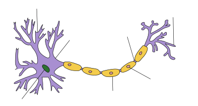Source: https://en.wikipedia.org/wiki/Neuron
When building neural network we connect neurons in a special structure like on the picture below:
 Source: https://hackernoon.com/log-analytics-with-deep-learning-and-machine-learning-20a1891ff70e
Source: https://hackernoon.com/log-analytics-with-deep-learning-and-machine-learning-20a1891ff70e
Then we use training data (such approach is called “supervised learning”) to learn neurons:
-
we send our training data as signals through network and receive some output
-
we compare that output with our real test result and send signals back to tell how good or bad the result was
-
repeat multiple times, so neurons are get learned. At each iteration they “work” to produce result, and then receive instructions how they should adjust their work.
-
after neurons are learned enough, we can send to them actual data we want to predict output to
And that’s it. Pretty simple. And mathematics behind that is pretty simple as well (at least at first course). The most difficult parts are computational problems, i.e. computer science.
Vectorization⌗
This is a key concept in a whole theme. Unfortunately in a course it wasn’t explained well. In a course it was told that instead of using a loop, you can just call that method in a NumPy library and everything will be faster, as there will be no loop. But what if loop is inside that method and I just don’t see it?
Key thing here is that operations that usually require loops can be done faster if they will be done on a whole array at the same time. For me it seems that CPU should have such kind of instructions for arrays. Or maybe it is done with multithreading. I don’t know. Here all my knowledge is ended. But it is at least something.
Do not use loops, where there is a way to do operation on a whole array/matrix/vector. Otherwise much more time might require to complete.
Parameters⌗
Given: X = A[0] — input Y — training data (output) m — number of training examples L — number of layers n[L] — number of units in layer L
To find: W[L]— matrices of weights b[L] — bias vectors
Dimensions:
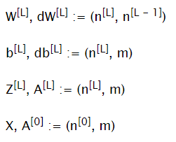
Hyperparameters⌗
These parameters should be tuned to get good results. Changing these values might change learning speed or quality a lot.
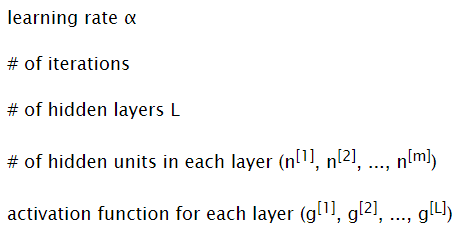
Activation functions⌗
Sigmoid⌗
Input: ℝ Output: (0; 1)
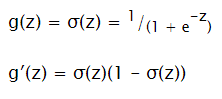
Good for output layer in classification problems (choose between 0 and 1)
Tanh⌗
Input: ℝ Output: (-1; 1)
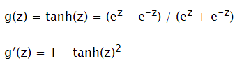
Not very good for output layer. But better for hidden layers, as provides more balancing than sigmoid.
Rectified Linear Unit (ReLU)⌗
Input: ℝ Output: [0, + ∞)
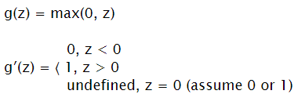
Good for hidden layers (has bigger gradient, so if tuned can learn faster than tanh) May be good for output layer if result is a positive real number. It might be that some neurons are constantly receiving z < 0, in such situation neuron just doesn’t work.
Leaky ReLU⌗
Input: ℝ Output: [0, + ∞)
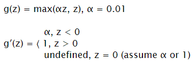
Improvement of ReLU to not have zeros for negative numbers.
Gradient descend⌗
Schema⌗
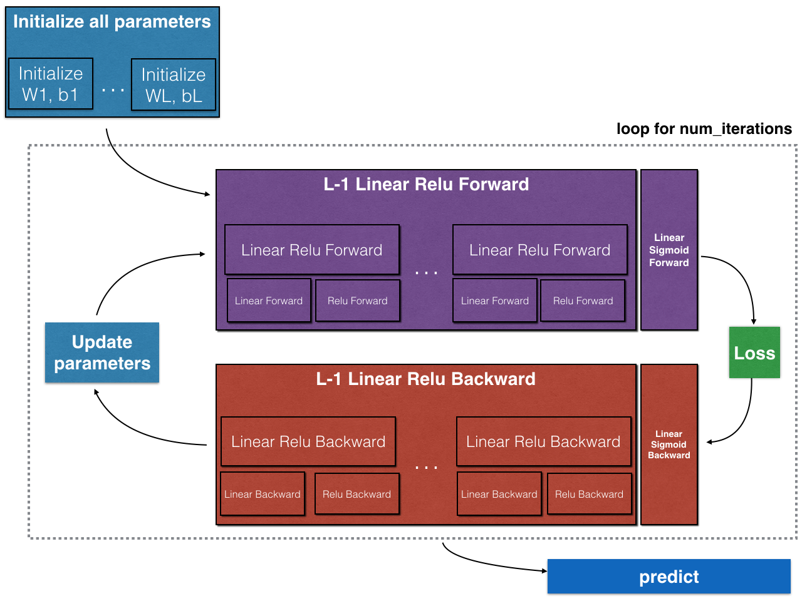Source: https://www.coursera.org/learn/neural-networks-deep-learning/home/welcome
Initialize Parameters⌗
It is important to initialize weight matrices with small numbers, but not zeroes. Initializing with zeros will lead to that network will work as a single unit in each layer network (units of the same level would compute same numbers). Initializing with a big number will probably lead to slower learning, as for sigmoid and tanh gradient will be very slow.
For bias vectors it is OK to initialize them with zeroes.
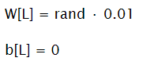
Forward Propagation⌗
For each layer (starting from input layer X = A[0]) compute next values A[L] using parameters on each layer
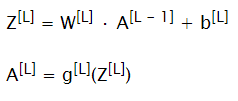
Compute Cost Function⌗
At the end of forward propagation, compute loss and dA[L] to prepare for backward propagation
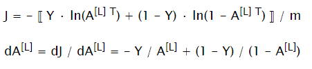
Backward Propagation⌗
Compute all dW[L], db[L] to update corresponding parameters
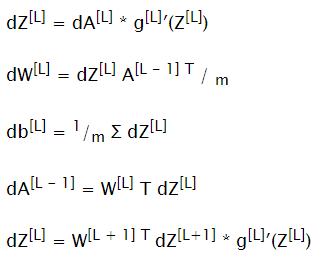
Update Parameters⌗
Update parameters and repeat process for a given number of iterations to train neural network
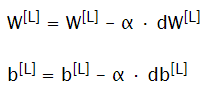
Predict⌗
Do one forward propagation step with calculated weight matrices and bias vectors and input for prediction as X.